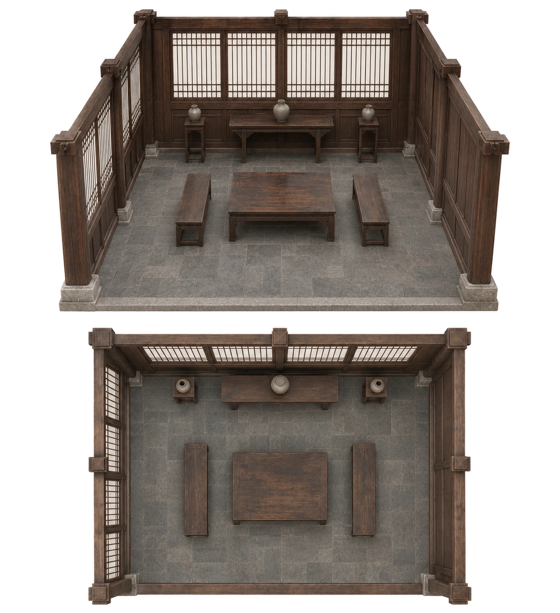
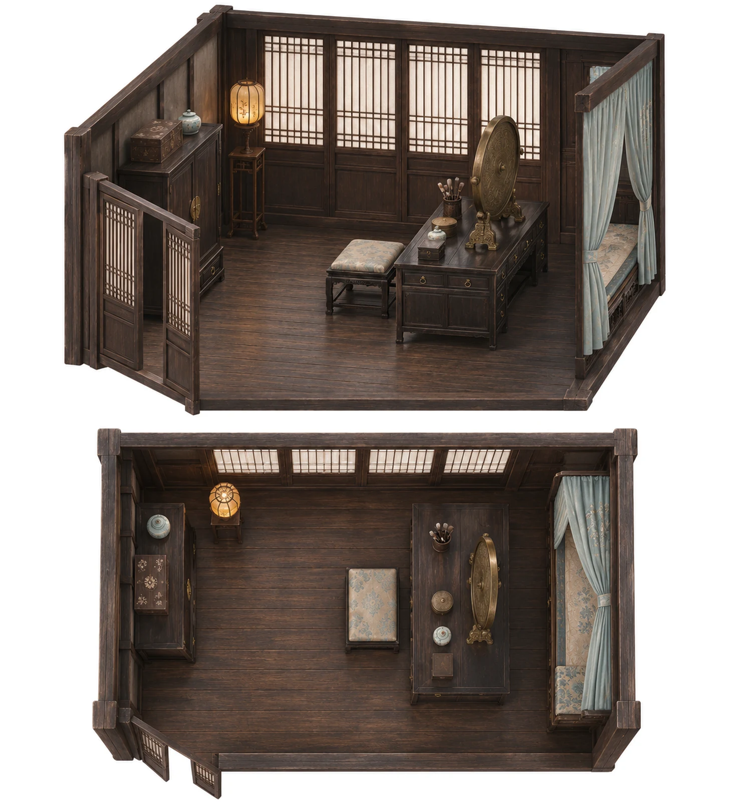

生发喷雾
剧本与分镜
完整剧本与分镜脚本
下载原文带货种草 · 生发喷雾 原片时长 34.81 秒 故事梗概 宅院小姐被长辈质问，得知妹妹可能代嫁。她回到梳妆室因稀发愈发焦急，侍女递来喷瓶。通过发顶特写与跳切，广告将稀发画面切换成饱满发髻，主仆在镜前惊喜收尾。 人物 小姐在正厅与梳妆室之间经历由愤怒到惊喜。长辈推动婚事压力。侍女阻止冲动动作并带入商品。小姐有常规和稀发两种发型状态。 场景 宅院正厅用格窗和木构建立冲突；梳妆室用铜镜、桌面和侧窗组织反打。 道具用途 喷瓶是广告展示物，圆镜用于主观验证，发冠与小剪刀交代两阶段动作，梳妆桌作为固定位置。 剧本与分镜 按原片抽帧重建的复拍制作稿。画面未能确认的对白、音效与镜头节奏按下表执行。 | 镜号 | 画面内容 | 镜头视角 | 使用资产 | 动作描述 | 台词/旁白 | 音效 | 单镜头时长 | | 01 | 小姐含泪问长辈 | 正脸近景切特写 | 米白衣小姐、黑金发冠、木构宅院正厅 | 先咬住情绪，继而抬眼发问 | 小姐：为什么偏偏要这样？ | 室内底音 | 4.00秒 | | 02 | 长辈说出由妹妹代嫁 | 双人过肩反打 | 深衣长辈、米白衣小姐、木构宅院正厅 | 长辈向前一步，小姐留在原处 | 长辈：只能由你妹妹代你出嫁。 | 衣袖摩擦 | 5.60秒 | | 03 | 小姐捂住头顶转身 | 正面中景接侧面跟拍 | 米白衣小姐稀发状态、木格窗梳妆室 | 她捂住发顶，急忙走到镜前 | — | 脚步、裙摆声 | 4.40秒 | | 04 | 小姐持剪，侍女赶来拉住 | 镜后斜角中近景 | 小姐、淡蓝衣侍女、圆形铜镜、旧式小剪刀道具 | 侍女稳住小姐手腕，劝她先停下 | 侍女：小姐，先放下。 | 桌面轻碰 | 4.50秒 | | 05 | 侍女递来白色瓶，小姐检查瓶子 | 双手到胸口特写 | 白色按压喷雾瓶、深木梳妆桌、淡蓝衣侍女 | 交接后小姐转动瓶身，再看向镜面 | — | 瓶壳轻响 | 4.30秒 | | 06 | 小姐朝发顶试喷 | 侧面近景到发顶特写 | 白色按压喷雾瓶、米白衣小姐稀发状态 | 按压一次，镜头接稀发区 | — | 喷雾短响 | 4.10秒 | | 07 | 发顶通过化妆跳切变饱满 | 头顶极近景切铜镜反射 | 米白衣小姐、圆形铜镜 | 同一头部位置切换至饱满发型 | — | 轻亮过渡音 | 4.40秒 | | 08 | 小姐和侍女在镜前互看 | 双人近景 | 米白衣小姐、淡蓝衣侍女、铜镜 | 小姐以双手扶发髻，侍女微笑 | — | 惊喜短音收束 | 3.51秒 | 时长合计 34.81 秒
制作资产
角色资产 · 8 项
场景资产 · 2 项

